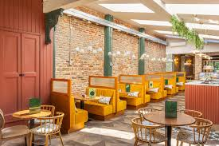

Here at BrewBox Coffee, we believe every cup tells a story. Nestled in the heart of Norton Village, our shop is more than just a place to grab your morning brew—it’s a warm and welcoming space where community, comfort, and craft come together. We source locally roasted beans to ensure every sip is rich, smooth, and full of character, and our baristas pour passion into every drink, from classic espressos to creative seasonal specials. Whether you’re catching up with friends, working on a project, or simply taking a quiet moment for yourself, BrewBox Coffee is designed to feel like home. We’re proud to be part of Norton Village, supporting local makers and creating a hub where everyone feels welcome.
